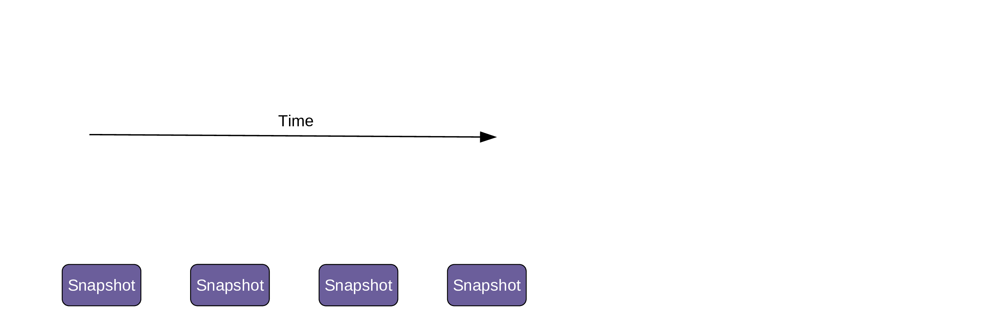
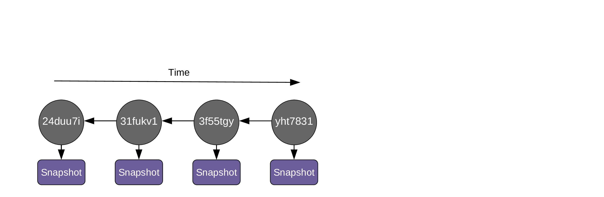
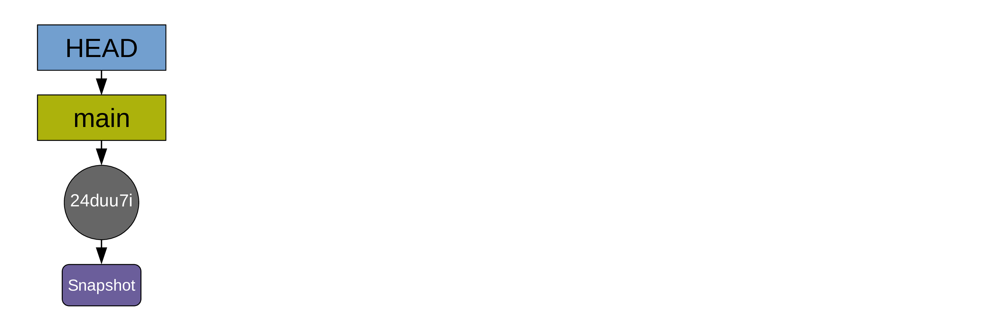
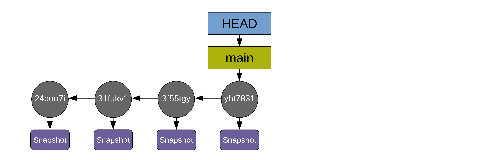
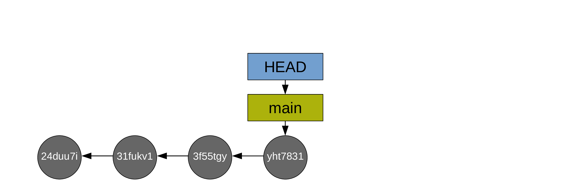
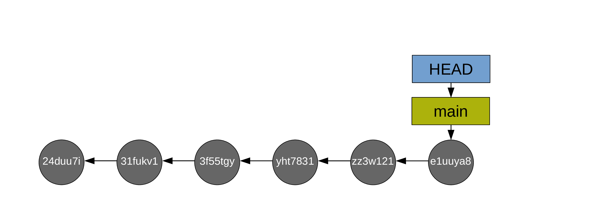
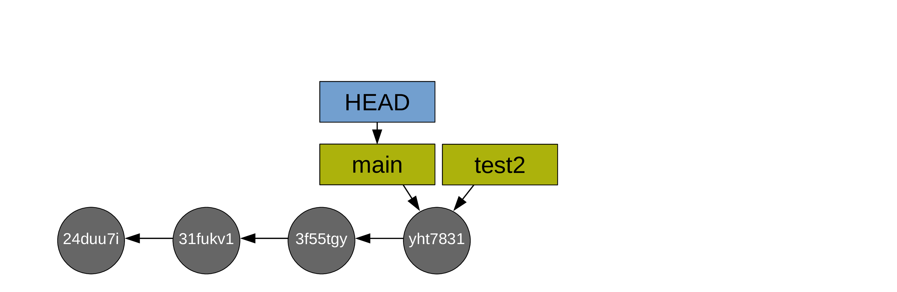
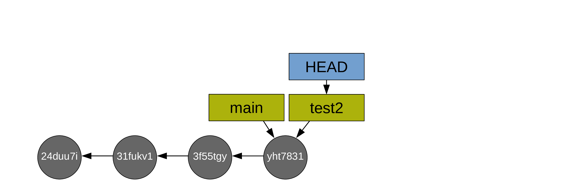
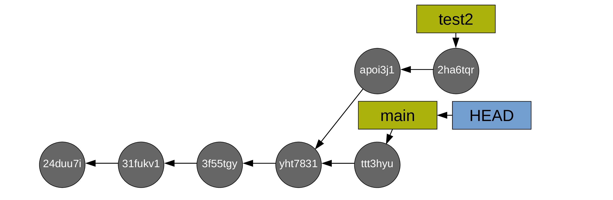
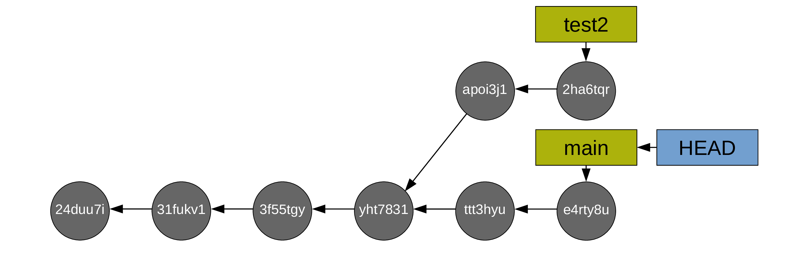

Version control with Git & GitHub
Abstract
Git is a free and open source version control system (a software that tracks changes to your files, allowing you to revisit or revert to older versions).
Using Internet hosting services such as GitHub, Git is also a powerful collaboration tool.
In this introductory workshop you will learn the basics of working with Git on the command line.
Introduction
What is a version control system?

from PhD
Whenever we work on an important document, we intuitively realize that it is important to keep key versions (e.g. the version of a manuscript that we sent to our supervisor, the revised version after we addressed their comments, the revised version after we addressed reviewer comments, etc.).
We have all been there …
The versions accumulate with names that are often less than helpful …

from Geek&Poke
… and soon enough, it is hell.
This is a form of versioning, but a terribly messy and inefficient one.
Version control systems are software that allow to handle this much more effectively.
Which version control system should I use?
If the trends of Google searches of the existing version control systems are any indication of their popularity, we can say that Git has crushed the competition since 2010.
Nowadays, it is indeed extremely rare to come across any other version control system.
Git is simply that good 🙂
Installation and setup
Installing Git
MacOS & Linux users
Install Git from the official website.
Windows users
Install Git for Windows. This will also install Git Bash, a Bash emulator.
Using Git
We will use Git from the command line throughout this workshop.
MacOS users: open Terminal.
Windows users: open Git Bash.
Linux users: open the terminal emulator of your choice.
Configuring Git
Before you can use Git, you need to set some basic configuration. You will do this in the terminal you just opened.
User identity
git config --global user.name "<Your Name>"
git config --global user.email "<your@email>"Example:
git config --global user.name "John Doe"
git config --global user.email "john.doe@gmail.com"Text editor
git config --global core.editor "<text-editor>"Example for nano:
git config --global core.editor "nano"Line ending
macOS, Linux, or WSL
git config --global core.autocrlf inputWindows
git config --global core.autocrlf trueList settings
git config --listDocumentation
Internal documentation
Man pages
git <command> --help
git help <command>
man git-<command>Example:
git commit --help
git help commit
man git-commitUseful keybindings when you are in the pager
SPACE scroll one screen down
b scroll one screen up
q quitCommand options
git <command> -hExample:
git commit -hOnline documentation
- Official Git manual
- Open source Pro Git book
Courses & workshops
Q & A
Let’s get started with an example
Mock project
Let’s imagine that you have been working on chapter 3 of your thesis for some time, without using a version control system. We will put that chapter under version control and see how you should work from now on.
First, we need to create a mock set of documents.
- Navigate to a suitable location
cd </some/suitable/location/in/your/computer>- Create the directory at the root of chapter 3
mkdir chapter3Make sure not to use any spaces in the name: Git doesn’t work well with spaces.
- Create a number of subdirectories
mkdir chapter3/src chapter3/ms chapter3/data chapter3/results- Create a mock manuscript
echo "# Chapter 3
## Introduction
Bla bla bla bla bla.
## Methods
Bla bla bla." > chapter3/ms/chapter3.mdGit can only version text files. If you write your papers or thesis chapter in text files (e.g. markdown, LaTeX, org-mode), you will be able to put them under version control, which is really convenient. If you use a word processor, you won’t be able to.
- Create a mock R script
echo "library(ggplot2)
library(dplyr)
df <- data.frame(
x = (1:5),
y = (1:5)
)
ggplot(df, aes(x, y)) + geom_point()" > chapter3/src/chapter3.REven if you use a word processor for your writing, your scripts (e.g. in Python, R, etc.) will be written in text files. So you will always be able to put at least those files under version control.
Initializing a Git repository
!! Make sure to enter the project before initializing the repository.
cd chapter3Now, you can run the command that will turn your chapter3 directory into a Git repository:
git initInitialized empty Git repository in chapter3/.git/Git is very verbose: you will often get useful feed-back after running commands.
When you run this command, Git creates a .git repository. This is where it will store all its files.
You can see that this repository was created by running:
ls -a.
..
.git
data
ms
results
srcIf you run git init in the wrong location, you can easily fix this: simply delete the .git directory that you created!
Creating commits
You can think of a commit as a snapshot of a particular version of your project.
You should create a new commit whenever you think that your project is at a point to which you might want to go back to.
Let’s create a first commit with the state of our chapter 3 before we do any more work to it:
git add .
git commit -m "Initial commit"[main (root-commit) 7f94f8e] Initial commit
2 files changed, 18 insertions(+)
create mode 100644 ms/chapter3.md
create mode 100644 src/chapter3.RTo create a commit, we first need to add the file(s) we want to add to our commit to the staging area (also called “index”). This is done with the command git add. To add all the files, we can use git add . (. represents the current directory).
Once we have added some files to the staging area, we can create a commit. But each commit has a message associated to it. One way to add this message is to use the command to create commits (git commit) with the -m flag (for “message”). Here, our message is simply “Initial commit”.
Git saves the history of a project as a series of snapshots:

Those snapshots are called commits:

Each commit is identified by a unique hash:
Each commit contains these metadata:
- author,
- date and time,
- the hash of parent commit(s),
- a message.
As soon as you create the first commit, a pointer called a branch is created and it points to that commit. By default, that first branch is called main:

Another pointer (HEAD) points to the branch main.
HEAD indicates where we are in the project history.
We can now do some work in our chapter 3. For instance, let’s imagine that we are adding a result section to our chapter3.md file.
echo "
## Results
We now have a bunch of results in our markdown manuscript." >> ms/chapter3.md!! Make sure to use >> here and not >: >> prepends content while > replaces any existing content.
If this new addition is important enough to justify making a new commit (how often you commit is up to you), we can do so:
git add ms/chapter3.md
git commit -m "Add result section to manuscript"[main 451c47b] Add result section to manuscript
1 file changed, 4 insertions(+)As you create more commits, the history of your project grows …

… and the pointers HEAD and main automatically move to the last commit:

For simplicity, the diagrams can be simplified this way:

Understanding the staging area
New Git users are often confused about the two-step commit process (first, you stage with git add, then you commit with git commit). This intermediate step seems, at first, totally unnecessary. In fact, it is very useful: without it, commits would always include all new changes made to a project and they would thus be very messy. The staging area allows to prepare (“stage”) the next commit. This way, you only commit what you want when you want.
Let’s go over a simple example:
We don’t always work linearly. Maybe you are working on a section of your manuscript when you realize by chance that there is a mistake in your script. You fix that mistake. On your next commit, it might make little sense to commit together that fix and your manuscript changes since they are not related. If your commits are random bag of changes, it will be very hard for future you to navigate your project history.
It is a lot better to only stage your script fix, commit it, then only stage your manuscript update, and commit this in a different commit.
The staging area allows you to pick and chose the changes from one or various files that constitute some coherent change to the project and that make sense to commit together.
Inspecting changes
List of modified files
One command you will run often when working with Git is git status:
git statusOn branch main
nothing to commit, working tree cleanThis means that we are on the branch main (that’s the only branch in our repo at this point) and that all changes to our project have been committed.
Let’s modify a file and see what happens:
echo "
## Conclusion
And finally, the great conclusion of our paper." >> ms/chapter3.mdgit statusOn branch main
Changes not staged for commit:
(use "git add <file>..." to update what will be committed)
(use "git restore <file>..." to discard changes in working directory)
modified: ms/chapter3.md
no changes added to commit (use "git add" and/or "git commit -a")Let’s modify another file:
echo "
a = 23" >> src/chapter3.Rgit statusOn branch main
Changes not staged for commit:
(use "git add <file>..." to update what will be committed)
(use "git restore <file>..." to discard changes in working directory)
modified: ms/chapter3.md
modified: src/chapter3.R
no changes added to commit (use "git add" and/or "git commit -a")Maybe we don’t want to create a commit with all those changes, so we only stage the changes made to the manuscript:
git add ms/chapter3.mdThen we check the status of our repository again:
git statusOn branch main
Changes to be committed:
(use "git restore --staged <file>..." to unstage)
modified: ms/chapter3.md
Changes not staged for commit:
(use "git add <file>..." to update what will be committed)
(use "git restore <file>..." to discard changes in working directory)
modified: src/chapter3.RIf we ran git commit at this point, we would create a new commit with the changes made to the manuscript.
List of actual changes
While git status gives us the list of new files and files with changes, it doesn’t allow us to see what those changes are. For this, we need a new command: git diff.
Difference between the working directory and the index
git diff shows the difference between the working directory (our actual files) and the index (staging area):
git diffdiff --git a/src/chapter3.R b/src/chapter3.R
index 95f1592..2bf030d 100644
--- a/src/chapter3.R
+++ b/src/chapter3.R
@@ -7,3 +7,5 @@ df <- data.frame(
)
ggplot(df, aes(x, y)) + geom_point()
+
+a = 23This allows us to see that src/chapter3.R has a new line (a = 23) and that it is not yet staged.
Difference between the index and your last commit
To see what would be committed if you ran git commit (so, to see the difference between the index and the last commit), you need to run instead:
git diff --cacheddiff --git a/ms/chapter3.md b/ms/chapter3.md
index 9408f32..80d2c5c 100644
--- a/ms/chapter3.md
+++ b/ms/chapter3.md
@@ -11,3 +11,7 @@ Bla bla bla.
## Results
We now have a bunch of results in our markdown manuscript.
+
+## Conclusion
+
+And finally, the great conclusion of our paper.This shows us the changes that we have staged but not yet committed (the changes to our manuscript).
Difference between the working directory and your last commit
This means, both of the above. This can been displayed with:
git diff HEADdiff --git a/ms/chapter3.md b/ms/chapter3.md
index 9408f32..80d2c5c 100644
--- a/ms/chapter3.md
+++ b/ms/chapter3.md
@@ -11,3 +11,7 @@ Bla bla bla.
## Results
We now have a bunch of results in our markdown manuscript.
+
+## Conclusion
+
+And finally, the great conclusion of our paper.
diff --git a/src/chapter3.R b/src/chapter3.R
index 95f1592..2bf030d 100644
--- a/src/chapter3.R
+++ b/src/chapter3.R
@@ -7,3 +7,5 @@ df <- data.frame(
)
ggplot(df, aes(x, y)) + geom_point()
+
+a = 23Now, let’s clean up our working directory by creating two new commits:
git commit -m "Add conclusion to the manuscript"[main c7fc9c1] Add conclusion to the manuscript
1 file changed, 4 insertions(+)git add .
git commit -m "Define the variable a in R script"[main a049a2f] Define the variable a in R script
1 file changed, 2 insertions(+)If we look at the status of our repository now, we can see that it is clean again:
git statusOn branch main
nothing to commit, working tree cleanIgnoring
Not everything should be under version control. For instance, you don’t want to put under version control non-text files or your initial data. You also shouldn’t put under version control documents that can be easily recreated such as graphs and script outputs.
However, you don’t want to have such documents constantly showing up when you run git status. In order to have a clean working directory while keeping them out of version control, you can create a file called .gitignore and add to it a list of files or patterns that you want Git to disregard.
For instance:
echo "/data/
/results/" > .gitignoreThis creates a .gitignore file with two entries (/data/ and /results/) and from now on, any file in either of these directories will be ignored by Git.
The .gitignore is a file like any other file, so you’ll want to stage and commit it:
git statusOn branch main
Untracked files:
(use "git add <file>..." to include in what will be committed)
.gitignore
nothing added to commit but untracked files present (use "git add" to track)git add .gitignore
git commit -m "Add .gitignore file with data and results"[main a1df8e5] Add .gitignore file with data and results
1 file changed, 2 insertions(+)
create mode 100644 .gitignoregit statusOn branch main
nothing to commit, working tree cleanDisplaying the commit history
So far, we have created 5 commits. To display them, you use the command git log:
git logcommit a1df8e56ad45ddd514ff951f2d65e4e1d40a641c (HEAD -> main)
Author: Marie-Helene Burle <xxx@xxx>
Date: Mon Oct 3 22:57:59 2022 -0700
Add .gitignore file with data and results
commit a049a2f6834801bf76fa3c2c191a59a3ec589d6e
Author: Marie-Helene Burle <xxx@xxx>
Date: Mon Oct 3 21:17:23 2022 -0700
Define the variable a in R script
commit c7fc9c1743d8a40c3f72d9450b9440dca1cb5922
Author: Marie-Helene Burle <xxx@xxx>
Date: Mon Oct 3 21:16:43 2022 -0700
Add conclusion to the manuscript
commit 451c47b386895b8b0b5bdd1a8734ef1d51f9ccc9
Author: Marie-Helene Burle <xxx@xxx>
Date: Mon Oct 3 18:35:51 2022 -0700
Add result section to manuscript
commit 7f94f8ed631a7390a910fa13cd4954cf9e8a3061
Author: Marie-Helene Burle <xxx@xxx>
Date: Mon Oct 3 18:19:28 2022 -0700
Initial commitAs you can see, commits are listed from the bottom up. You can customize the output of git log by playing with the many existing flags (you can run man git-log to get the list of all flags).
For instance, you can display each commit as a one-liner:
git log --onelinea1df8e5 (HEAD -> main) Add .gitignore file with data and results
a049a2f Define the variable a in R script
c7fc9c1 Add conclusion to the manuscript
451c47b Add result section to manuscript
7f94f8e Initial commitYou can display it as a graph:
git log --graph* commit a1df8e56ad45ddd514ff951f2d65e4e1d40a641c (HEAD -> main)
| Author: Marie-Helene Burle <xxx@xxx>
| Date: Mon Oct 3 22:57:59 2022 -0700
|
| Add .gitignore file with data and results
|
* commit a049a2f6834801bf76fa3c2c191a59a3ec589d6e
| Author: Marie-Helene Burle <xxx@xxx>
| Date: Mon Oct 3 21:17:23 2022 -0700
|
| Define the variable a in R script
|
* commit c7fc9c1743d8a40c3f72d9450b9440dca1cb5922
| Author: Marie-Helene Burle <xxx@xxx>
| Date: Mon Oct 3 21:16:43 2022 -0700
|
| Add conclusion to the manuscript
|
* commit 451c47b386895b8b0b5bdd1a8734ef1d51f9ccc9
| Author: Marie-Helene Burle <xxx@xxx>
| Date: Mon Oct 3 18:35:51 2022 -0700
|
| Add result section to manuscript
|
* commit 7f94f8ed631a7390a910fa13cd4954cf9e8a3061
Author: Marie-Helene Burle <xxx@xxx>
Date: Mon Oct 3 18:19:28 2022 -0700
Initial commitHere is an example of more complex customization:
git log \
--graph \
--date=short \
--pretty=format:'%C(cyan)%h %C(blue)%ar %C(auto)%d'`
`'%C(yellow)%s%+b %C(magenta)%ae'* a1df8e5 88 seconds ago (HEAD -> main)Add .gitignore file with data and results xxx@xxx
* a049a2f 2 hours ago Define the variable a in R script xxx@xxx
* c7fc9c1 2 hours ago Add conclusion to the manuscript xxx@xxx
* 451c47b 4 hours ago Add result section to manuscript xxx@xxx
* 7f94f8e 5 hours ago Initial commit xxx@xxxGetting information about a commit
git log is useful to get an overview of our project history, but the information we get about each commit is limited. To get additional information about a particular commit, you can use git show followed by the hash of the commit you are interested about.
For instance, let’s explore our second commit:
git show 451c47b # Replace the hash by the hash of your second commitcommit 451c47b386895b8b0b5bdd1a8734ef1d51f9ccc9 (HEAD -> main)
Author: Marie-Helene Burle <xxx@xxx>
Date: Mon Oct 3 18:35:51 2022 -0700
Add result section to manuscript
diff --git a/ms/chapter3.md b/ms/chapter3.md
index b88424b..9408f32 100644
--- a/ms/chapter3.md
+++ b/ms/chapter3.md
@@ -7,3 +7,7 @@ Bla bla bla bla bla.
## Methods
Bla bla bla.
+
+## Results
+
+We now have a bunch of results in our markdown manuscript.In addition to displaying the commit metadata, this also displays the difference with the previous commit.
Revisiting old commits
The pointer HEAD, which normally points to the branch main which itself points to latest commit, can be moved around. By moving HEAD to any commit, you can revisit the state of your project at that particular version.
The command for this is git checkout followed by the hash of the commit you want to revisit.
For instance, we could revisit the first commit in our example with:
git checkout 7f94f8e # Replace the hash by the hash of your first commitNote: switching to '7f94f8e'.
You are in 'detached HEAD' state. You can look around, make experimental
changes and commit them, and you can discard any commits you make in this
state without impacting any branches by switching back to a branch.
If you want to create a new branch to retain commits you create, you may
do so (now or later) by using -c with the switch command. Example:
git switch -c <new-branch-name>
Or undo this operation with:
git switch -
Turn off this advice by setting config variable advice.detachedHead to false
HEAD is now at 7f94f8e Initial commitThis is the same as the command git switch --detach 7f94f8e: git switch is a command introduced a few years ago because git checkout can be used for many things in Git and it was confusing many users. git switch allows to switch from one branch to another or, with the --detach flag, to switch to a commit as is the case here.
Once you have seen what you wanted to see, you can go back to your branch main with:
git checkout mainPrevious HEAD position was 7f94f8e Initial commit
Switched to branch 'main'This is the same as the command git switch main.
!! Be careful not to forget to go back to your branch main before making changes to your project. If you want to move the project to a new direction from some old commit, you need to create a new branch before doing so. When HEAD points directly to a commit (and not to a branch), this is called “Detached HEAD” and it is not a position from which you want to modify the project.
It is totally fine to move HEAD around and have it point directly to a commit (instead of a branch) as long as you are only looking at a version of your project and get back to a branch before doing some work:

Branches
One of the reasons Git has become so popular is its branch system.
Remember that little pointer called main? That’s our main branch: the one Git creates automatically when we create our first commit.
A branch in Git is just that: a little pointer. This makes creating branches extremely quick and cheap. But they are extremely convenient.
Instead of checking out a commit as we just saw (which creates a detached HEAD state), we can instead create a new branch on that commit with:
git switch -c newbranch 7f94f8e # Replace the hash by the hash of your first commitSwitched to a new branch 'newbranch'This creates a new branch called newbranch on our first commit and switches HEAD to it. If you do this instead of entering a detached HEAD state, it is totally safe to make changes and create commits from there. You can easily switch HEAD back and forth between the two branches with:
git switch main # Moves HEAD back to the branch mainSwitched to branch 'main'git switch newbranchSwitched to branch 'newbranch'git statusOn branch newbranch
nothing to commit, working tree cleanIf you already checked out the commit 7f94f8e with git checkout 7f94f8e, you can create the new branch newbranch on that commit and switch to it with:
git switch -c newbranchSwitched to a new branch 'newbranch'Those are equivalent workflows. Just don’t forget never to work from a detached HEAD state. You can look around in that state, but that’s it. Why? Because commits that are not part of a branch get automatically deleted on a regular basis when Git runs its garbage collection. So any commits you make from a detached HEAD will eventually be lost. And that’s probably not what you want.
In short, git switch allows you to switch HEAD from one branch to another. With the -c flag, you can create a new branch before switching to it. And by adding some starting point such as a commit, the new branch gets created on that commit rather than on the position of HEAD.
Now, have a look at what happens if you run git log from newbranch:
git logcommit 7f94f8ed631a7390a910fa13cd4954cf9e8a3061 (HEAD -> newbranch)
Author: Marie-Helene Burle <xxx@xxx>
Date: Mon Oct 3 18:19:28 2022 -0700
Initial commitHorror! It looks like all our commits except for the first one are gone!
In fact, they still exist, but by default, git log only shows what is on the current branch. To see all the commits that are on any branch in your project, you need to add the --all flag:
git log --allcommit 863afd650ecaeab85da2f8ed0d3c88a778754727 (main)
Author: Marie-Helene Burle <xxx@xxx>
Date: Tue Oct 4 10:32:39 2022 -0700
Add .gitignore file with data and results
commit dc780c75c76220a39f7c89a76bebb670dad25b8e
Author: Marie-Helene Burle <xxx@xxx>
Date: Tue Oct 4 10:32:12 2022 -0700
Define the variable a in R script
commit 5ba96b254b505f7d04f59f988a621a746a0c6896
Author: Marie-Helene Burle <xxx@xxx>
Date: Tue Oct 4 10:28:51 2022 -0700
Add conclusion to the manuscript
commit 451c47b386895b8b0b5bdd1a8734ef1d51f9ccc9
Author: Marie-Helene Burle <xxx@xxx>
Date: Mon Oct 3 18:35:51 2022 -0700
Add result section to manuscript
commit 7f94f8ed631a7390a910fa13cd4954cf9e8a3061 (HEAD -> newbranch)
Author: Marie-Helene Burle <xxx@xxx>
Date: Mon Oct 3 18:19:28 2022 -0700
Initial commitIn this log, we can now see main, but that HEAD points to newbranch.
Listing branches
git branch main
* newbranchThe * shows the branch you are currently on (i.e. the branch to which HEAD points to).
Comparing branches
You can use git diff to compare branches:
git diff newbranch maindiff --git a/.gitignore b/.gitignore
new file mode 100644
index 0000000..e85f44a
--- /dev/null
+++ b/.gitignore
@@ -0,0 +1,2 @@
+/data/
+/results/
diff --git a/ms/chapter3.md b/ms/chapter3.md
index b88424b..80d2c5c 100644
--- a/ms/chapter3.md
+++ b/ms/chapter3.md
@@ -7,3 +7,11 @@ Bla bla bla bla bla.
## Methods
Bla bla bla.
+
+## Results
+
+We now have a bunch of results in our markdown manuscript.
+
+## Conclusion
+
+And finally, the great conclusion of our paper.
diff --git a/src/chapter3.R b/src/chapter3.R
index 95f1592..2bf030d 100644
--- a/src/chapter3.R
+++ b/src/chapter3.R
@@ -7,3 +7,5 @@ df <- data.frame(
)
ggplot(df, aes(x, y)) + geom_point()
+
+a = 23This shows all the lines that have been modified (added or deleted) between the commits both branches point to.
Merging branches
If you want to merge branches, switch to the branch you want to merge into the other one, then run git merge.
For instance, if we want to merge newbranch onto main, we would first switch to newbranch (we are already on it, so nothing to do here), then:
git merge mainUpdating 7f94f8e..863afd6
Fast-forward
.gitignore | 2 ++
ms/chapter3.md | 8 ++++++++
src/chapter3.R | 2 ++
3 files changed, 12 insertions(+)
create mode 100644 .gitignoreThis merge is called a “fast-forward” merge because main and newbranch had not diverged. It was simply a question of having newbranch catch up to main.
If you run git log again, you will see that newbrach has now caught up with main:
git logcommit 863afd650ecaeab85da2f8ed0d3c88a778754727 (HEAD -> newbranch, main)
Author: Marie-Helene Burle <xxx@xxx>
Date: Tue Oct 4 10:32:39 2022 -0700
Add .gitignore file with data and results
commit dc780c75c76220a39f7c89a76bebb670dad25b8e
Author: Marie-Helene Burle <xxx@xxx>
Date: Tue Oct 4 10:32:12 2022 -0700
Define the variable a in R script
commit 5ba96b254b505f7d04f59f988a621a746a0c6896
Author: Marie-Helene Burle <xxx@xxx>
Date: Tue Oct 4 10:28:51 2022 -0700
Add conclusion to the manuscript
commit 451c47b386895b8b0b5bdd1a8734ef1d51f9ccc9
Author: Marie-Helene Burle <xxx@xxx>
Date: Mon Oct 3 18:35:51 2022 -0700
Add result section to manuscript
commit 7f94f8ed631a7390a910fa13cd4954cf9e8a3061
Author: Marie-Helene Burle <xxx@xxx>
Date: Mon Oct 3 18:19:28 2022 -0700
Initial commitHere is a classic situation of fast-forward merge.
Instead of working on your branch main, you create a test branch and work on it (so HEAD is on the branch test and both move along as you create commits):
When you are happy with the changes you made on your test branch, you decide to merge main onto it.
First, you switch to main:
Then you do the fast-forward merge from main onto test (so main catches up to test):

Then, usually, you delete the branch test as it has served its purpose (with git branch -d test). Alternatively, you can switch back to it and do the next bit of experimental work in it. This allows to keep main free of possible mishaps and bad developments (if you aren’t happy with the work you did on your test branch, you can simply delete it and Git will clean the commits that are on it but not on main during the next garbage collection.

If both branches have diverged (you created commits from both main and newbranch), the merge would require the creation of an additional commit called a “merge commit”.
Here is a classic situation of merge with a commit.
You create a test branch and switch to it:


Then you create some commits:


Now you switch back to main:

And you create commits from main too:


To merge your main branch and your test branch, a new commit is now required (note that the command is the same as in the case of a fast-forward merge: git merge. Git will create the new commit automatically. As long as there is no conflict, it is just as easy as a fast-forward merge. We will talk later about resolving conflicts).

After which, you can delete the (now useless) test branch (with git branch -d test2):

Remotes
What are remotes?
Remotes are copies of a project and its history.
They can be located anywhere, including on external drive or on the same machine as the project, although they are often on a different machine to serve as backup, or on a network (e.g. internet) to serve as a syncing hub for collaborations.
Popular online Git repository managers & hosting services:
Creating a remote on GitHub
Create a free GitHub account
Sign up for a free GitHub account.
Later on, to avoid having to type your password all the time, you should set up SSH for your account.
Create an empty repository on GitHub
- Go to the GitHub website, login, and go to your home page.
- Look for the
Repositoriestab & click the greenNewbutton. - Enter the name you want for your repo, without spaces.
- Make the repository public or private.
Link empty repository to your repo
Click on the Code green drop-down button, select SSH if you have set SSH for your GitHub account or HTTPS and copy the address.
In the command line, cd inside your project, and add the remote:
git remote add <remote-name> <remote-address>remote-name is a convenience name to identify that remote. You can choose any name, but since Git automatically call the remote origin when you clone a repo, it is common practice to use origin as the name for the first remote.
Example (using an SSH address):
git remote add origin git@github.com:<user>/<repo>.gitExample (using an HTTPS address):
git remote add origin https://github.com/<user>/<repo>.gitGetting information on remotes
List remotes:
git remoteList remotes with their addresses:
git remote -vGet more information on a remote:
git remote show <remote-name>Example:
git remote show originManaging remotes
Rename a remote:
git remote rename <old-remote-name> <new-remote-name>Delete a remote:
git remote remove <remote-name>Change the address of a remote:
git remote set-url <remote-name> <new-url> [<old-url>]Getting data from a remote
If you collaborate on a project, you have to get the data added by your teammates to keep your local project up to date.
To download new data from a remote, you have 2 options:
git fetchgit pull
Fetching changes
Fetching downloads the data from a remote that you don’t already have in your local version of the project:
git fetch <remote-name>The branches on the remote are now accessible locally as <remote-name>/<branch>. You can inspect them or you can merge them into your local branches.
Example:
git fetch originPulling changes
Pulling fetches the changes & merges them onto your local branches:
git pull <remote-name> <branch>Example:
git pull origin mainIf your branch is already tracking a remote branch, you can omit the arguments:
git pullPushing to a remote
Uploading data to the remote is called pushing:
git push <remote-name> <branch-name>Example:
git push origin mainYou can set an upstream branch to track a local branch with the -u flag:
git push -u <remote-name> <branch-name>Example:
git push -u origin mainFrom now on, all you have to run when you are on main is:
git push

by jscript
Collaborating with Git and GitHub
Setup
When you collaborate with others using Git and GitHub, there are three possible situations:
- You create a project on your machine and want others to contribute to it (1).
- You want to contribute to a project started by others & …
… you have write access to it (2).
… you do not have write access to it (3).
(1) You start the project
Create a remote on GitHub
These are the steps we already saw earlier.
1. Create an empty repository on GitHub
- Go to the GitHub website, login, and go to your home page.
- Look for the
Repositoriestab & click the greenNewbutton. - Enter the name you want for your repo, without spaces.
- Make the repository public or private.
2. Link empty repository to your repo
Click on the Code green drop-down button, select SSH if you have set SSH for your GitHub account or HTTPS and copy the address.
In the command line, cd inside your project, and add the remote:
git remote add <remote-name> <remote-address>remote-name is a convenience name to identify that remote. You can choose any name, but since Git automatically call the remote origin when you clone a repo, it is common practice to use origin as the name for the first remote.
Example (using an SSH address):
git remote add origin git@github.com:<user>/<repo>.gitExample (using an HTTPS address):
git remote add origin https://github.com/<user>/<repo>.gitIf you are working alone on this project and you only wanted to have a remote for backup, you are set.
If you don’t want to grant others write access to the project, and you only accept contributions through pull requests, you are also set.
If you want to grant your collaborators write access to the project however, you need to add them to it.
Invite collaborators
- Go to your GitHub project page.
- Click on the
Settingstab. - Click on the
Manage accesssection on the left-hand side (you will be prompted for your GitHub password). - Click on the
Invite a collaboratorgreen button. - Invite your collaborators with one of their GitHub user name, their email address, or their full name.
(2) Write access to project
Clone project
cd to location where you want your local copy, then:
git clone <remote-address> <local-name>This sets the project as a remote to your new local copy and that remote is automatically called origin.
Without <local-name>, the repo will have the name of the last part of the remote address.
(3) No write access to project
Collaborate without write access
In that case, you will have to submit a pull request:
- Fork the project on GitHub.
- Clone your fork on your machine.
- Add the initial project as a second remote & call it
upstream. - Pull from
upstreamto update your local project. - Create & checkout a new branch.
- Make & commit your changes on that branch.
- Push that branch to your fork (i.e.
origin— remember that you do not have write access toupstream). - Go to the original project GitHub’s page & open a pull request.
Workflow
When you collaborate with others using GitHub (or other equivalent service), you and others will work simultaneously on some project. How does this work?
Remember that to upload your changes to the remote on GitHub you push to it with git push.
If one of your collaborators has made changes to the remote (pushing from their own machine), you won’t be able to push. Instead, you will get the following message:
To xxx.git
! [rejected] main -> main (fetch first)
error: failed to push some refs to 'xxx.git'
hint: Updates were rejected because the remote contains work that you do
hint: not have locally. This is usually caused by another repository pushing
hint: to the same ref. You may want to first integrate the remote changes
hint: (e.g., 'git pull ...') before pushing again.
hint: See the 'Note about fast-forwards' in 'git push --help' for details.The solution?
You first have to download (git pull) their work onto your machine, merge it with yours (which will happen automatically if there are no conflicts), before you can push your work to GitHub.
Now… what if there are conflicts?
Resolving conflicts
Git works line by line. As long as your collaborators and you aren’t working on the same line(s) of the same file(s) at the same time, there will not be any problem. If however you modified one or more of the same line(s) of the same file(s), Git will not be able to decide which version should be kept. When you git pull their work on your machine, the automatic merging will get interrupted and Git will ask you to resolve the conflict(s) before the merge can resume. It will conveniently tell you which file(s) contain the conflict(s).
There are fancy tools to resolve conflicts, but you can do it in any text editor: simply open the file(s) listed by Git as having conflicts and look for the following markers:
<<<<<<< HEAD
This is your version.
=======
This is the alternative version of the same section of the file.
>>>>>>> alternative versionThese markers are added by Git to signal the areas of conflict. It is up to you to choose between the two versions (or create a third one) and remove the conflict markers. After that, you can stage the file(s) which contained the conflicts to finish the merge (and then you can commit).
Conclusion
Git is a powerful and fairly complex tool, but you don’t have to master it entirely to start using it. Start by putting your projects (e.g. thesis chapters, papers) under version control and by creating commits whenever you reach important stages in your work.
Things will grow from there.

from xkcd.com